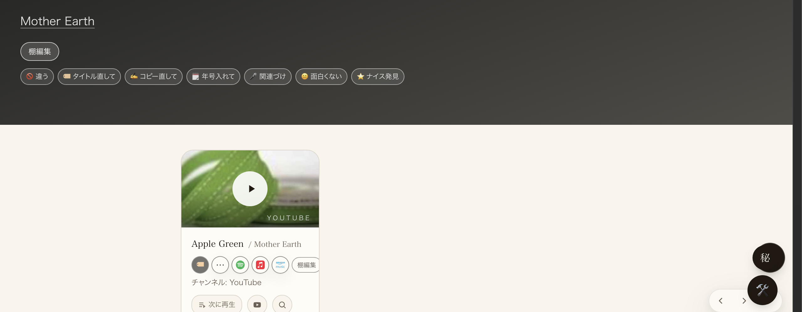
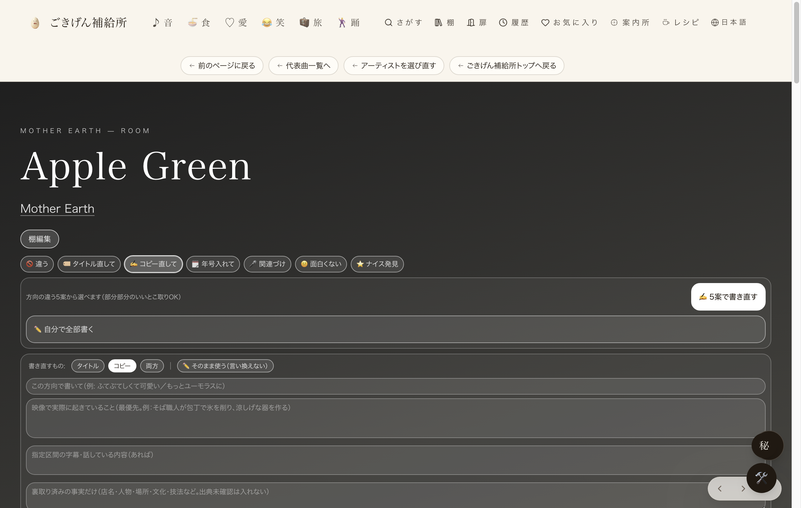

共有資料の一覧
／ 確認ページ #13 コピーの書き直しを5案(A〜E)から選べるようにする
#13 コピーの書き直しを5案(A〜E)から選べるようにする
2026-09-06 実装・main合流・本番(GitHub Pages)反映まで実測確認
「✍️ コピー直して」タグの中に「✍️ 5案で書き直す」（事実/感情/問い/言い切り/情景の5案A〜E）「✏️ 自分で全部書く」「↩ 1個前に戻す」が実装され、本番で実際に動作している。main合流(f8d17ccc・cdfe7fdf、origin/mainの祖先であることを確認済み)・Lovable公開とも完了。下のスクリーンショットは、本番ページを実際にブラウザで開き「コピー直して」タグを押して撮影した実物（DBへの書き込みは無し＝タグ開閉のみ）。
② 数字
5案
A〜E・事実/感情/問い/言い切り/情景の5方向
実測
本番ページを直接操作してスクショ撮影(2026-09-06)
③ 前と後（実データでのスクリーンショット）
Before：タグを開く前

After：「コピー直して」を押すと5案ボタン+自分で書く欄が出る

④ 押せるリンク
動作確認用の曲ページ（実物・本番）
https://joy-relief-station.lovable.app/cover-guide?artist=mother-earth&song=apple-green&admin=1
⑤ 何をどう確かめたか
確認項目
結果
main合流
f8d17ccc(5案本体)+cdfe7fdf(1個前に戻す)がorigin/mainの祖先であることをgit merge-base --is-ancestorで確認
Lovable公開
本番ページを直接開いて実物のUIを確認
実機スクショ
公開専用Chrome(CDP)で本番ページを操作し「コピー直して」タグを開いた前後を撮影